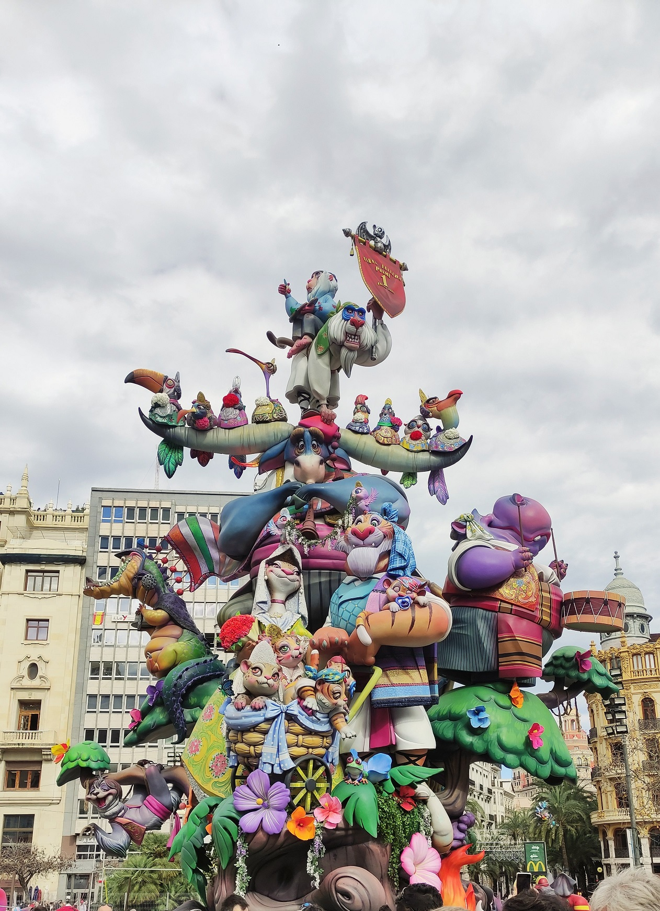
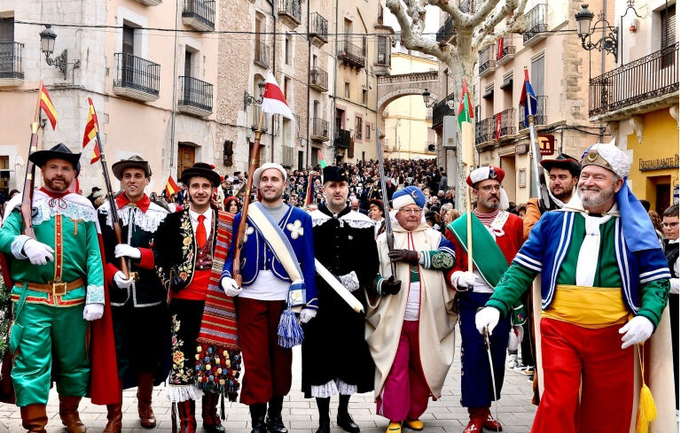
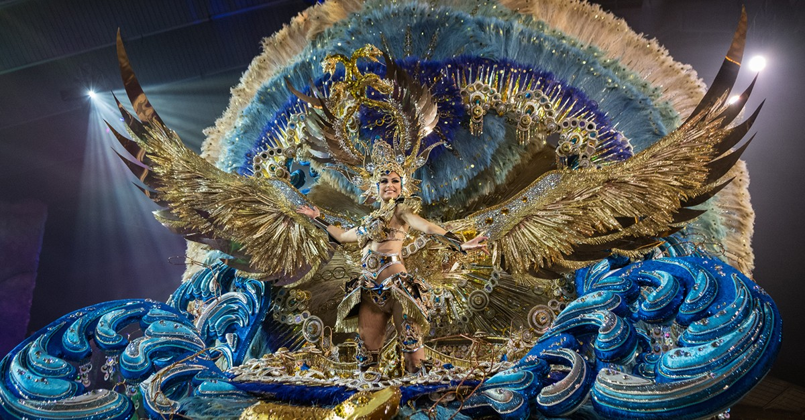
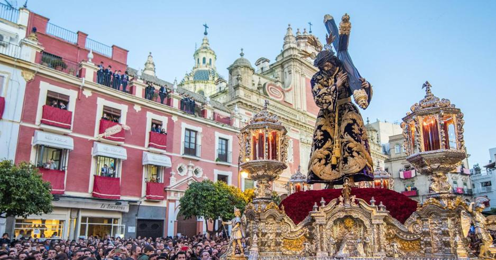
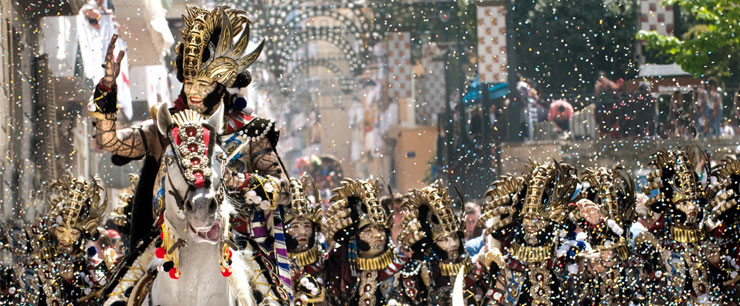
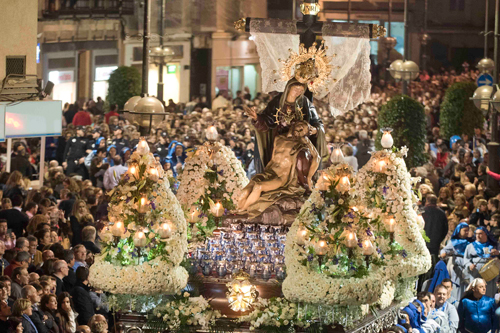
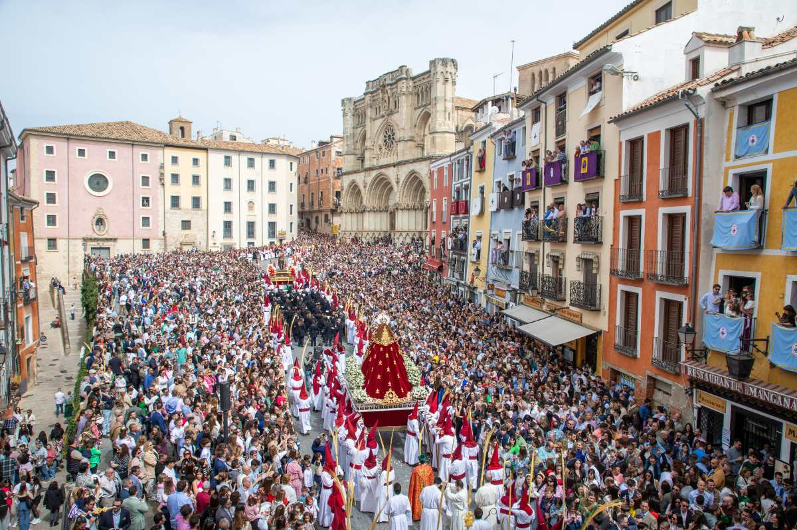
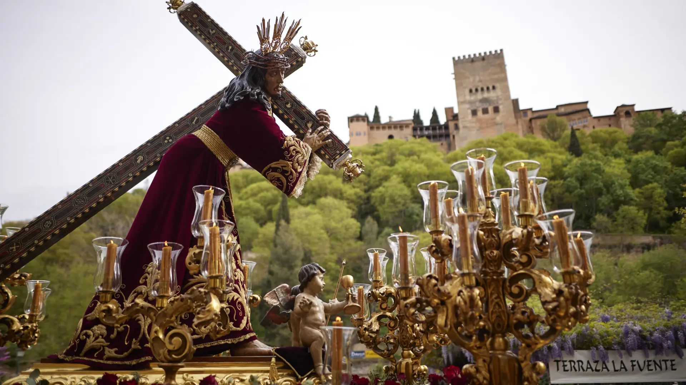
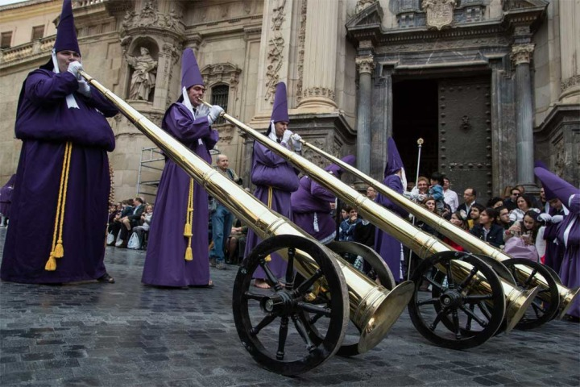
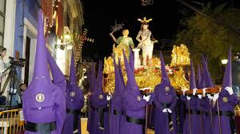

Bienvenido a Folklorius
España es un país de fiestas vivas. Cada pueblo, cada ciudad, guarda tradiciones que llevan siglos celebrándose. Aquí las contamos con rigor, con respeto y con el entusiasmo de quien sabe que la cultura popular merece ser conocida.
Fichas destacadas
-

Las Fallas de Valencia Arte que arde, tradición que renace cada marzo. -

Moros y Cristianos de Bocairent Historia que desfila por calles medievales. -
Semana Santa de Málaga Fe, arte y emoción en cada trono.
-
San Fermín de Pamplona Del blanco y rojo a la devoción, del 6 al 14 de julio.
-
 Carnaval de Cádiz La voz del pueblo hecha copla y sátira.
Carnaval de Cádiz La voz del pueblo hecha copla y sátira. -

Carnaval de Santa Cruz de Tenerife Donde la calle se disfraza de libertad. -

Semana Santa de Sevilla Donde la fe se hace arte y el arte sale a la calle. -
 La Tomatina de Buñol El caos más divertido que puedes vivir.
La Tomatina de Buñol El caos más divertido que puedes vivir. -

Moros y Cristianos de Alcoi Donde nació la tradición que se extendió por el mundo. -

Semana Santa de Cartagena Diez días de orden, luces y tradición militar en el Mediterráneo. -
Semana Santa de Lorca Donde el bordado se hace piel y la historia galopa.
-

Semana Santa de Cuenca Pasión vertical entre hoces, silencios y tambores roncos. -

Semana Santa de Granada Pasión entre el Albaicín, el Sacromonte y la Alhambra. -

Semana Santa de Murcia El genio de Salzillo esculpido en la tradición huertana. -

Semana Santa de Jumilla Más de seiscientos años de fe entre túnicas y viñedos.